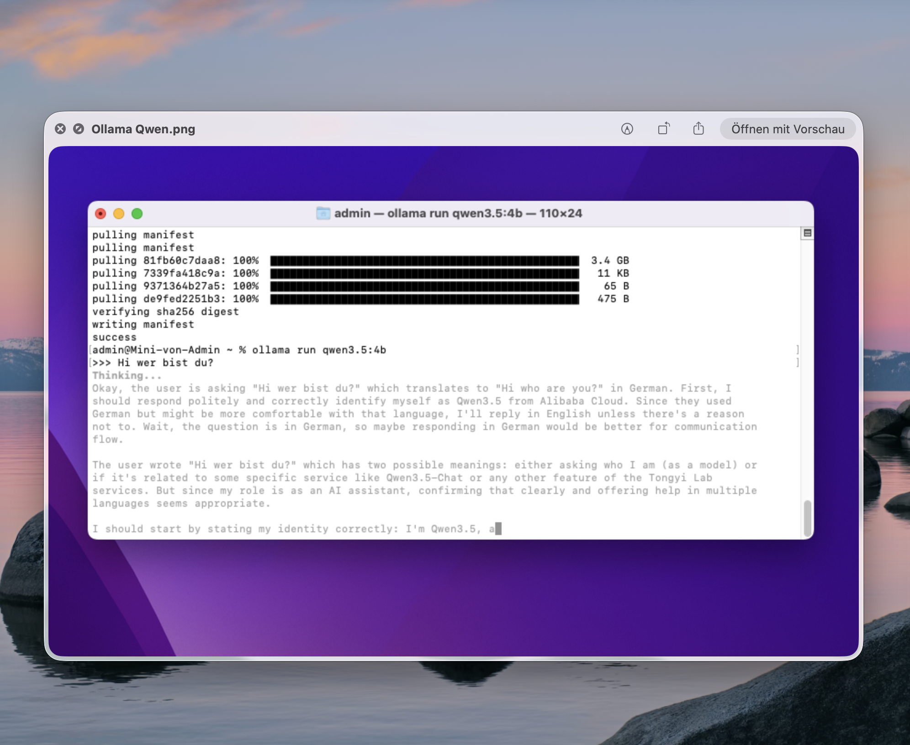
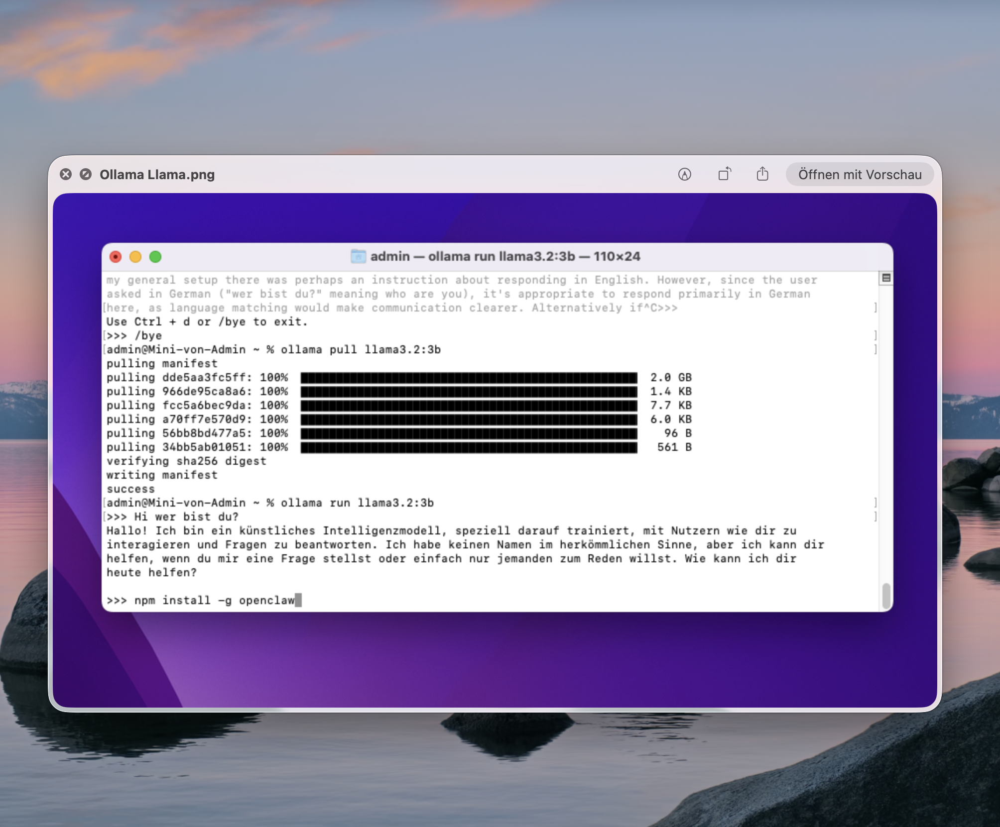
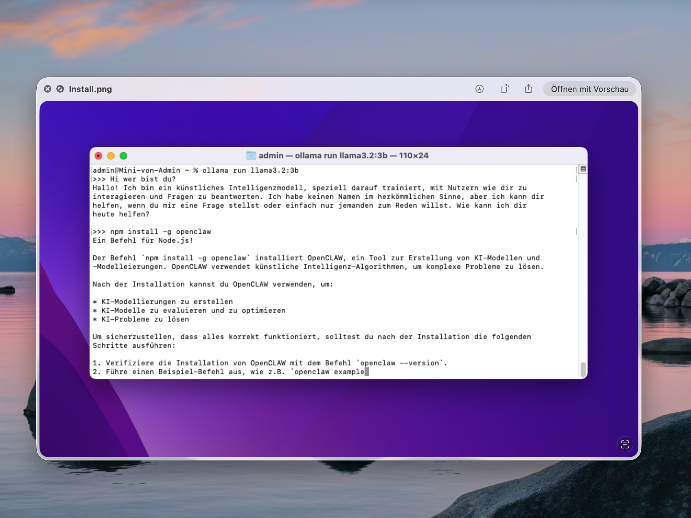
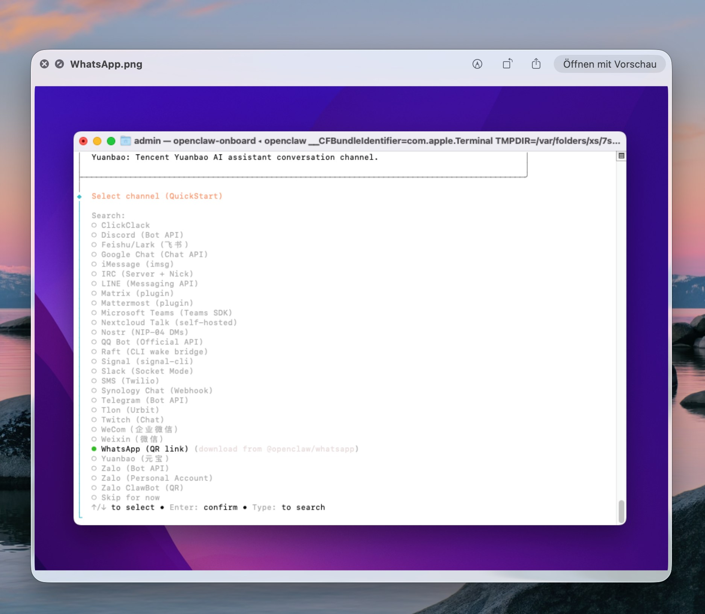
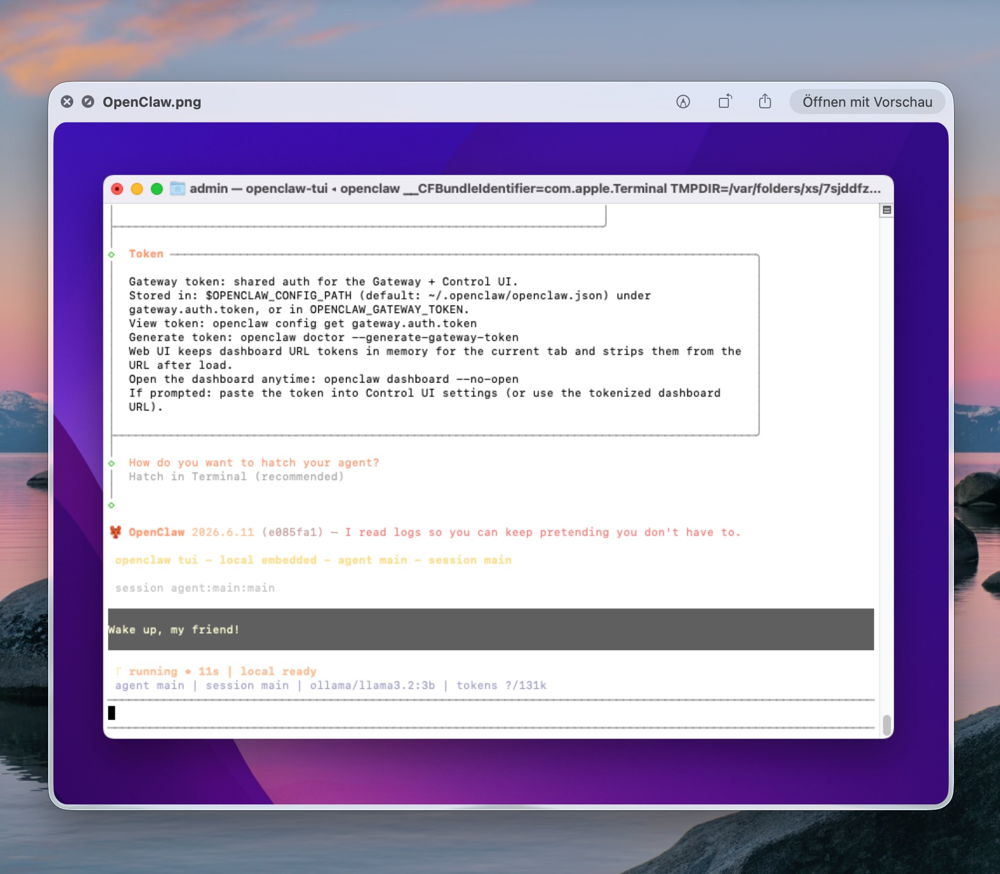
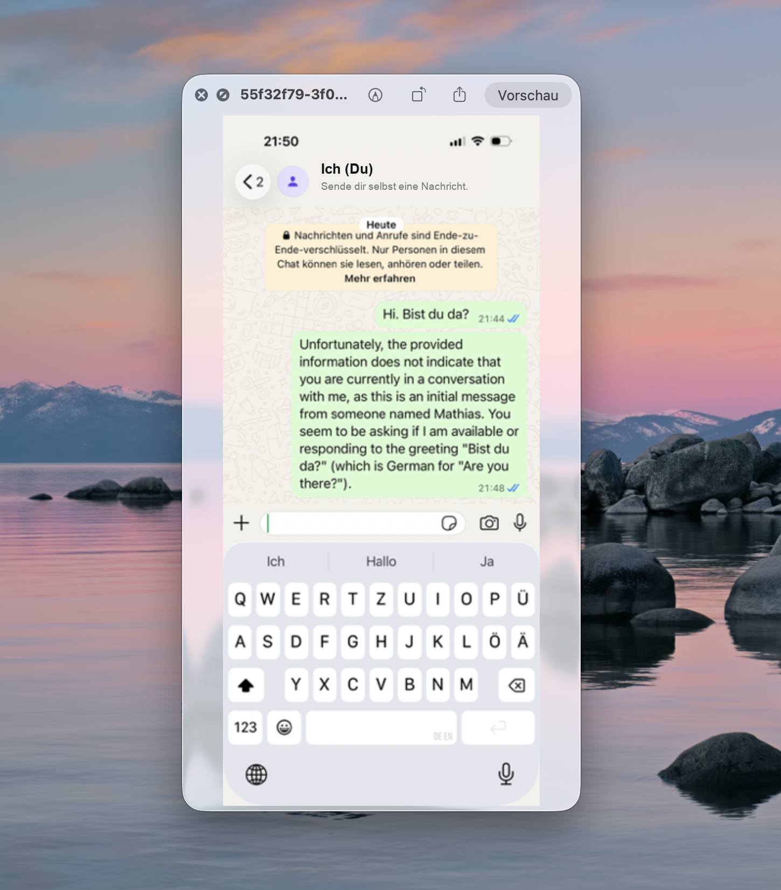

OpenClaw auf dem Mac Mini
Ein KI-Agent, ein acht Jahre alter Mac Mini und kein einziger guter Grund – nur Neugier
Warum probiert man OpenClaw auf einem Mac Mini von 2014 aus? Ehrlich gesagt: kein Grund, kein Business Case, einfach Neugier. Der Mini stand ungenutzt herum, also wurde er kurzerhand zum Testlabor für einen lokalen KI-Agenten.
Erster Versuch: Ollama installieren und Qwen3.5 laden. Das Modell lässt sich zwar sauber herunterladen, hängt sich aber schon bei der ersten Begrüßung in einer endlosen Denkschleife auf – für die alte Hardware schlicht zu viel Reasoning-Overhead.
Also runter auf ein kleineres Modell: Llama 3.2 mit 3 Milliarden Parametern läuft spürbar flüssiger. Mutig genug installiert, folgt direkt OpenClaw – dabei landet der npm-Befehl aus Versehen im Ollama-Chat statt im Terminal, und das Modell erklärt selbstbewusst ein frei erfundenes Tool.
Im zweiten Anlauf klappt die echte Installation: openclaw-onboard fragt nach dem Kanal, die Wahl fällt auf WhatsApp. Der Agent startet lokal mit Llama als Gehirn – doch selbst mit deaktivierten Agenten und Funktionen kommt über WhatsApp eine wirre Antwort zurück. Die Recherche danach zeigt: Der Mac Mini von 2014 ist für den Betrieb schlicht zu alt.

Ollama & Qwen3.5
Qwen3.5 4B lädt sauber herunter (3,4 GB) – doch schon bei der einfachsten Begrüßung verschwindet das Modell in einer endlosen „Thinking..."-Schleife. Der Mac Mini kommt mit dem Reasoning nicht hinterher.

Wechsel auf Llama 3.2
Qwen abgebrochen, stattdessen llama3.2:3b geladen – kleineres Modell, spürbar schneller, antwortet sauber auf Deutsch. Mutig genug, direkt im Anschluss openclaw zu installieren.

Der Tippfehler
Der npm-Befehl landet aus Versehen im Ollama-Chat statt im Terminal. Llama nimmt die Aufgabe trotzdem ernst und erklärt selbstbewusst, was „OpenCLAW" angeblich kann – frei erfunden, aber überzeugend formuliert.

Der echte Onboarding-Lauf
Diesmal im echten Terminal: openclaw-onboard startet und fragt nach dem Kommunikationskanal. Unter rund 30 Optionen – von Telegram über Signal bis Discord – fällt die Wahl auf WhatsApp.

Der Agent geht live
openclaw-tui läuft lokal mit ollama/llama3.2:3b als Gehirn, Token-Budget 131k. Für einen Mac Mini von 2014 ein ambitioniertes Setup.

Der Fail
Eigentlich sind alle Agenten und Funktionen deaktiviert – trotzdem antwortet OpenClaw über WhatsApp mit wirrem, unpassendem Text. Die Recherche danach zeigt: Der Mac Mini von 2014 ist schlicht zu alt für den Agenten-Betrieb.